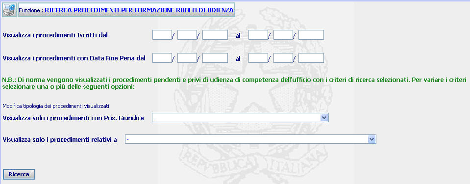

GENERALITA'
RICERCA PROCEDIMENTI PER
FORMAZIONE RUOLO DI UDIENZA: La funzione prescelta
consente di impostare una ricerca tesa ad individuare i procedimenti
pendenti e privi di udienza, eventualmente limitando la stessa a quelli con una
determinata posizione giuridica e a quelli aventi un determinato contenuto, al
fine di procedere alla formazione dei ruoli di udienza.
LE MASCHERE VIDEO
La funzione
in esame viene realizzata attraverso
l'utilizzo della maschera che segue.

COME FARE PER ...
Per
individuare i
procedimenti pendenti e per i quali non risulti fissata l'udienza, l'utente
deve:
| NOME |
DESCRIZIONE |
| Visualizza i procedimenti iscritti dal
|
Compilare i campi con giorno, mese, anno
in formato numerico |
| Visualizza i procedimenti con data fine
pena dal |
Compilare i campi con giorno, mese, anno
in formato numerico |
| Visualizza solo i procedimenti con Pos.
Giuridica |
Compilare il campo, utilizzando
l'apposita tendina, per indicare una posizione giuridica dei
procedimenti alla quale si vuole limitare la ricerca |
| Visualizza solo i procedimenti relativi a |
Compilare il campo, utilizzando
l'apposita tendina, per indicare il tipo di contenuto dei procedimenti
al quale si vuole limitare la ricerca |